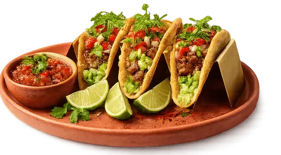
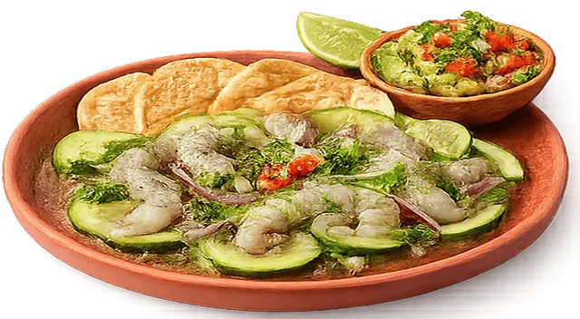
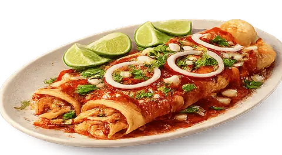

Tacos locos
Una explosión de sabor en cada bocado. Nuestros tacos locos combinan ingredientes frescos, salsas intensas
y ese toque callejero que los hace irresistibles. Perfectos para los que buscan disfrutar sin límites.
Explora el plato

Fajitas picantes
Sabor que se siente y se disfruta. Nuestras fajitas picantes llegan con ese toque justo de intensidad,
mezclando carne jugosa, verduras salteadas y especias que despiertan todos los sentidos.
Explora el plato

Aguachile fresquito
Frescura en estado puro. El aguachile más refrescante, con un equilibrio perfecto entre cítrico, picante y
marisco, ideal para los que buscan algo ligero pero lleno de carácter.
Explora el plato

Enchilada apasionada
Tradición con mucho flow. Nuestras enchiladas están bañadas en salsas llenas de personalidad, con rellenos
jugosos y ese toque casero que nunca falla.
Explora el plato